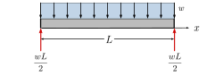
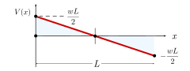

Example 8.8.2. Uniformly Distributed Load.
Use the integration method to find the equations for shear and moment as a function of \(x\text{,}\) for a simply supported beam carrying a uniformly distributed load \(w\) over its entire length \(L\text{.}\)

Answer.
\begin{align*}
V(x) \amp = w\left( \frac{L}{2} -x\right ) \amp M(x) \amp = \frac{w}{2} (Lx - x^2)
\end{align*}
Solution.
This beam has only one load section, and on that section the load is constant and points down, so,
\begin{equation*}
w(x)= -w\text{.}
\end{equation*}
There is a pinned connection at \(x=0\) which provides a vertical force and no concentrated moment, so the initial conditions there are \(V(0) = wL/2\text{,}\) and \(M(0) = 0\text{.}\)
\begin{align*}
\Delta V \amp = - \int_0^x w(x) \ dx \\
V(x) - \cancelto{wL/2}{V(0)} \amp = -w x \\
V(x)\amp = \frac{wL}{2} - wx \\
\amp = w\left(\frac{L}{2} - x\right)
\end{align*}

\begin{align*}
\Delta M \amp = \int_0^x V(x) \ dx \\
M(x)- \cancelto{0}{M(0)} \amp = \int_0^x w\left(\frac{L}{2} - x \right) \ dx \\
M(x) \amp = \frac{w}{2} (Lx - x^2)
\end{align*}